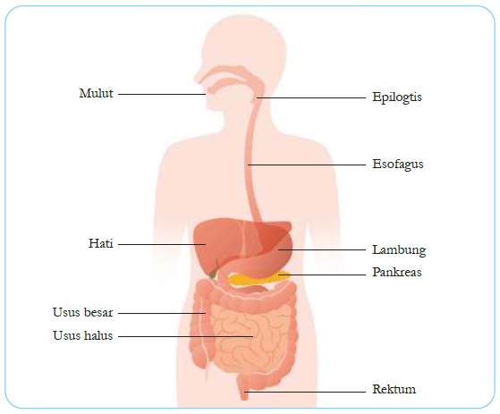
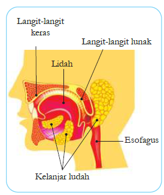
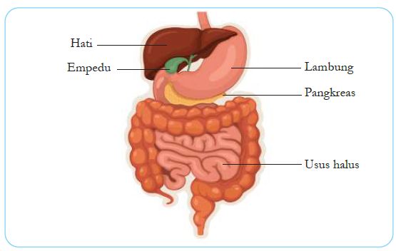

A. Zat Gizi dan Makanan
Makanan adalah sumber energi dan zat-zat yang diperlukan tubuh untuk pertumbuhan, perkembangan, dan pemeliharaan tubuh. Zat gizi yang diperlukan tubuh meliputi:
- Karbohidrat: Sumber energi utama (nasi, roti, kentang, jagung)
- Protein: Zat pembangun dan pengganti sel yang rusak (daging, ikan, telur, tempe, tahu)
- Lemak: Cadangan energi dan pelarut vitamin A, D, E, K
- Vitamin: Pengatur metabolisme tubuh
- Mineral: Pembentuk tulang dan gigi, pengatur keseimbangan cairan
- Air: Pelarut zat-zat dalam tubuh dan pengatur suhu tubuh
B. Sistem Pencernaan Manusia
Sistem pencernaan adalah sistem organ yang berfungsi mencerna makanan menjadi zat-zat yang lebih sederhana agar dapat diserap dan digunakan oleh tubuh. Pencernaan makanan terjadi secara mekanis (pengunyahan) dan kimiawi (dengan bantuan enzim).

Gambar 2.1: Organ-organ pencernaan manusia (Hati, Empedu, Lambung, Pankreas, Usus Halus)
1. Mulut (Cavum Oris)
Mulut adalah tempat pertama kali makanan masuk. Di dalam mulut terjadi pencernaan mekanis oleh gigi dan pencernaan kimiawi oleh enzim ptialin (amilase) dalam air liur yang mengubah amilum menjadi maltosa.
- Gigi: Memotong, merobek, dan mengunyah makanan
- Lidah: Membantu menelan, mengecap rasa, dan mengaduk makanan
- Kelenjar Ludah: Menghasilkan air liur yang mengandung enzim ptialin

Gambar 2.2: Struktur rongga mulut (Langit-langit keras, Langit-langit lunak, Lidah, Kelenjar ludah, Esofagus)
2. Kerongkongan (Esofagus)
Kerongkongan adalah saluran yang menghubungkan mulut dengan lambung. Di kerongkongan terjadi gerakan peristaltik (gerakan meremas-remas) yang mendorong makanan menuju lambung. Panjang kerongkongan sekitar 25 cm.
3. Lambung (Ventrikulus)
Lambung adalah organ berbentuk kantung yang terletak di rongga perut sebelah kiri. Lambung menghasilkan getah lambung yang mengandung:
- Asam klorida (HCl): Membunuh bakteri dan mengaktifkan pepsinogen
- Pepsin: Mengubah protein menjadi pepton
- Renin: Menggumpalkan protein susu (kasein)
- Lipase: Mencerna lemak dalam jumlah kecil
Di lambung, makanan dicerna secara mekanis (oleh otot lambung) dan kimiawi (oleh enzim). Makanan berada di lambung selama 3-5 jam.
4. Usus Halus (Intestinum Tenue)
Usus halus adalah tempat pencernaan dan penyerapan sari makanan yang paling utama. Panjangnya sekitar 6-7 meter dan terdiri dari tiga bagian:
- Usus dua belas jari (duodenum): Menerima getah pankreas dan empedu
- Usus kosong (jejunum): Tempat pencernaan kimiawi berlangsung
- Usus penyerapan (ileum): Tempat penyerapan sari-sari makanan
Dinding usus halus memiliki jonjot usus (vili) yang berfungsi memperluas permukaan penyerapan.

Gambar 2.3: Kelenjar pencernaan (Hati, Empedu, Pankreas)
5. Kelenjar Pencernaan
- Hati (Hepar): Menghasilkan empedu untuk mengemulsikan lemak
- Kantung Empedu: Menyimpan dan memekatkan empedu
- Pankreas: Menghasilkan getah pankreas yang mengandung enzim amilase, tripsin, dan lipase
6. Usus Besar (Intestinum Crassum)
Usus besar berfungsi menyerap air dan garam mineral dari sisa makanan. Di usus besar terdapat bakteri Escherichia coli (E. coli) yang membantu membusukkan sisa makanan dan menghasilkan vitamin K. Sisa makanan yang tidak diserap akan membentuk feses.
7. Rektum dan Anus
Rektum adalah tempat penyimpanan feses sebelum dikeluarkan. Anus adalah lubang pengeluaran feses dari tubuh (defekasi/BAB).
C. Enzim Pencernaan
| Enzim | Dihasilkan Oleh | Fungsi |
|---|---|---|
| Ptialin (Amilase) | Kelenjar ludah | Mengubah amilum menjadi maltosa |
| Pepsin | Lambung | Mengubah protein menjadi pepton |
| Renin | Lambung | Menggumpalkan protein susu |
| Amilase pankreas | Pankreas | Mengubah amilum menjadi maltosa |
| Tripsin | Pankreas | Mengubah protein menjadi asam amino |
| Lipase | Pankreas & lambung | Mengubah lemak menjadi asam lemak dan gliserol |
D. Gangguan pada Sistem Pencernaan
- Gigi berlubang (karies): Kerusakan gigi akibat bakteri dan sisa makanan
- Sariawan (stomatitis): Luka pada mulut akibat kekurangan vitamin C
- Maag (gastritis): Peradangan lambung akibat pola makan tidak teratur
- Diare: Buang air besar encer akibat infeksi bakteri/virus
- Konstipasi (sembelit): Sulit buang air besar akibat kurang serat
- Usus buntu (apendisitis): Peradangan usus buntu
- Tifus: Infeksi bakteri Salmonella typhi
- Cacingan: Infeksi cacing (cacing kremi, cacing pita, cacing tambang)
💡 Cara Menjaga Kesehatan Sistem Pencernaan
- Makan makanan bergizi seimbang
- Makan secara teratur (3 kali sehari)
- Makan makanan yang higienis dan matang
- Minum air putih yang cukup (8 gelas/hari)
- Perbanyak konsumsi serat (sayur dan buah)
- Mengunyah makanan dengan baik
- Mengurangi makanan cepat saji dan berlemak
- Olahraga teratur
- Mencuci tangan sebelum makan
E. Rangkuman
- Zat gizi yang diperlukan tubuh: karbohidrat, protein, lemak, vitamin, mineral, dan air
- Sistem pencernaan terdiri dari saluran pencernaan dan kelenjar pencernaan
- Saluran pencernaan: mulut → kerongkongan → lambung → usus halus → usus besar → rektum → anus
- Pencernaan mekanis: penghancuran fisik; pencernaan kimiawi: penguraian oleh enzim
- Usus halus adalah tempat utama pencernaan dan penyerapan sari makanan
- Enzim pencernaan: ptialin, pepsin, renin, amilase, tripsin, lipase
- Pola hidup sehat dapat mencegah gangguan sistem pencernaan
F. Latihan Soal
A. Pilihan Ganda
- Zat gizi yang berfungsi sebagai sumber energi utama adalah...
- a. Protein
- b. Karbohidrat
- c. Lemak
- d. Vitamin
- Enzim yang terdapat dalam air liur dan berfungsi mengubah amilum menjadi maltosa adalah...
- a. Pepsin
- b. Renin
- c. Ptialin (Amilase)
- d. Tripsin
- Organ pencernaan yang menghasilkan asam klorida (HCl) untuk membunuh bakteri adalah...
- a. Mulut
- b. Kerongkongan
- c. Lambung
- d. Usus halus
- Tempat terjadinya penyerapan sari-sari makanan adalah...
- a. Lambung
- b. Usus besar
- c. Usus halus
- d. Kerongkongan
- Penyakit yang disebabkan oleh kekurangan vitamin C adalah...
- a. Rabun senja
- b. Beri-beri
- c. Skorbut
- d. Rakhitis
B. Essay
- Sebutkan 6 zat gizi yang dibutuhkan tubuh dan jelaskan fungsi masing-masing!
- Jelaskan perbedaan pencernaan mekanis dan pencernaan kimiawi, berikan contohnya!
- Uraikan urutan saluran pencernaan manusia dari mulut hingga anus!
- Mengapa usus halus dikatakan sebagai tempat utama pencernaan dan penyerapan? Jelaskan!
- Sebutkan 5 cara menjaga kesehatan sistem pencernaan!